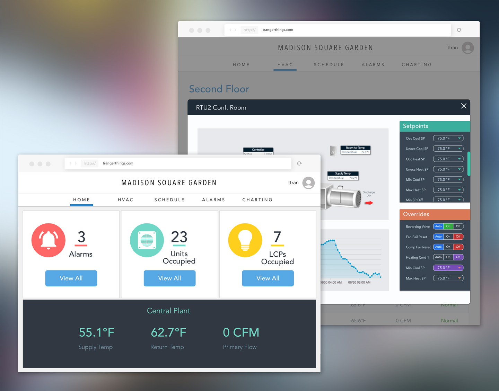
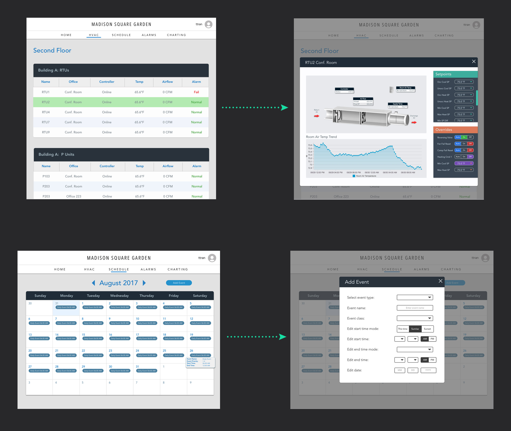
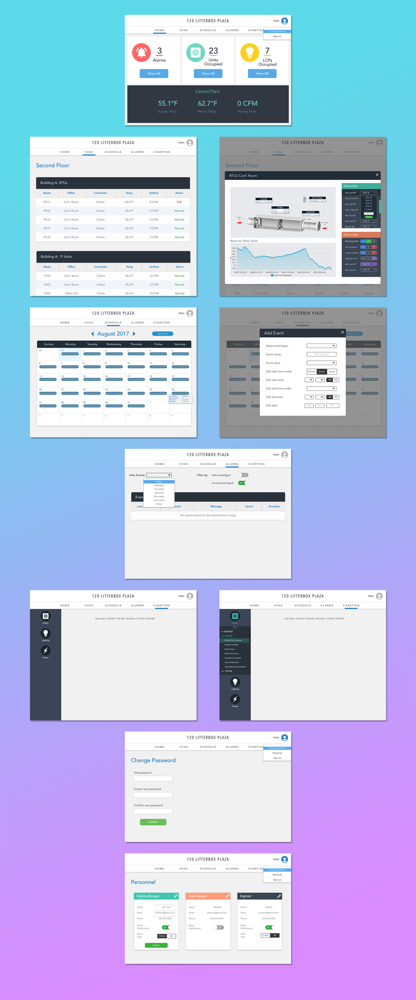

POSITION
WEB DESIGNER
TOOLS & SKILLS USED
SKETCH - ZEPLIN - DGLUX5
OBJECTIVE
One of my biggest contributions for Controlco was to completely re-design one of our client's website. It was a massive task because I had to come up with an entirely new interface on my own and it would have to be compatible with our standards. The websites we host provide access to HVAC and lighting controls, as well as alarms and other system backbones. While I'd be giving the current website a huge facelift, it is also important that the new design would retain some sense of familiarity for our end users.

APPROACH
The first thing I had to deal with was figuring out a color scheme. Most of our systems have been using dark colors so I took the leap and designed around a lighter interface. I decided to go with subtle shades of grey and blue/greens, while using a lot of white space. I played around with different color combinations and ran it through the VP of operations. Once the palette and font type were finalized, I started on building the mockup on Sketch.

There were a few new concepts I introduced into this design that would make for better usability. On the current site, when users are on the HVAC detail list, clicking an air handler from one of the tables will result in a new page opening. My answer to prevent users from having to go up to click the browser back button was to include a lightbox instead. With this feature, users will be able to effortless switch between HVAC units with minimal mouse movement.

An element that I believed to be flawed on the old site were the areas where users can select options via dropdown. Even in forms where there were only two choices, the dropdown was the only way for them to choose. It wasn't efficient because there was an unnecessary mouse click involved and users are only able to see their options when they click on the dropdown. My solution: a toggle feature so that users can see their options at first glance and easily switch between the two.

A NEW GENERATION OF CONTROLCO WEBSITES
This particular website was the first to deviate from our previous websites in terms of the design. It was the first opportunity that I was given as a designer and so I had a lot at stake. But after presenting the design to my VP and the clients, they were elated with the outcome. This point in time marked the beginning of new design initiatives for Controlco websites.
